Intuit Mailchimp · Account security
When Intuit leadership tasked my team with working toward mandating all Mailchimp customers move to two-factor authentication, my team inherited a security system with almost no documentation, engineers who had built it were long gone, and users who were already angry. What followed was equal parts archaeology and product strategy/design. This is the story of how we turned a compliance ask into a meaningful security and experience overhaul.
Why this project was harder than it sounds
Requiring two-factor authentication across an entire user base isn't something most SaaS products do. Banks do it. Government portals do it. Email marketing platforms generally don't. So when Intuit leadership issued the directive, my team felt the weight of the ask immediately: users already had complicated feelings about Mailchimp's authentication experience, and we were being asked to make it mandatory.
We quickly got to work auditing the current state. And that's when things got interesting. There was almost no internal documentation. The engineers who had originally built the authentication system had largely left the company. So we did what you do when the map doesn't exist: we drew it ourselves.
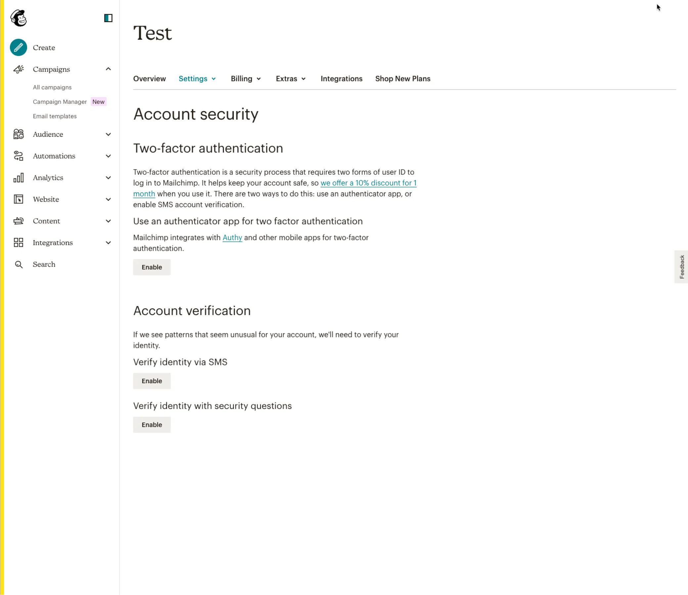
The state of Mailchimp's account security settings before this project - a jumble of options with little hierarchy or clear ownership.
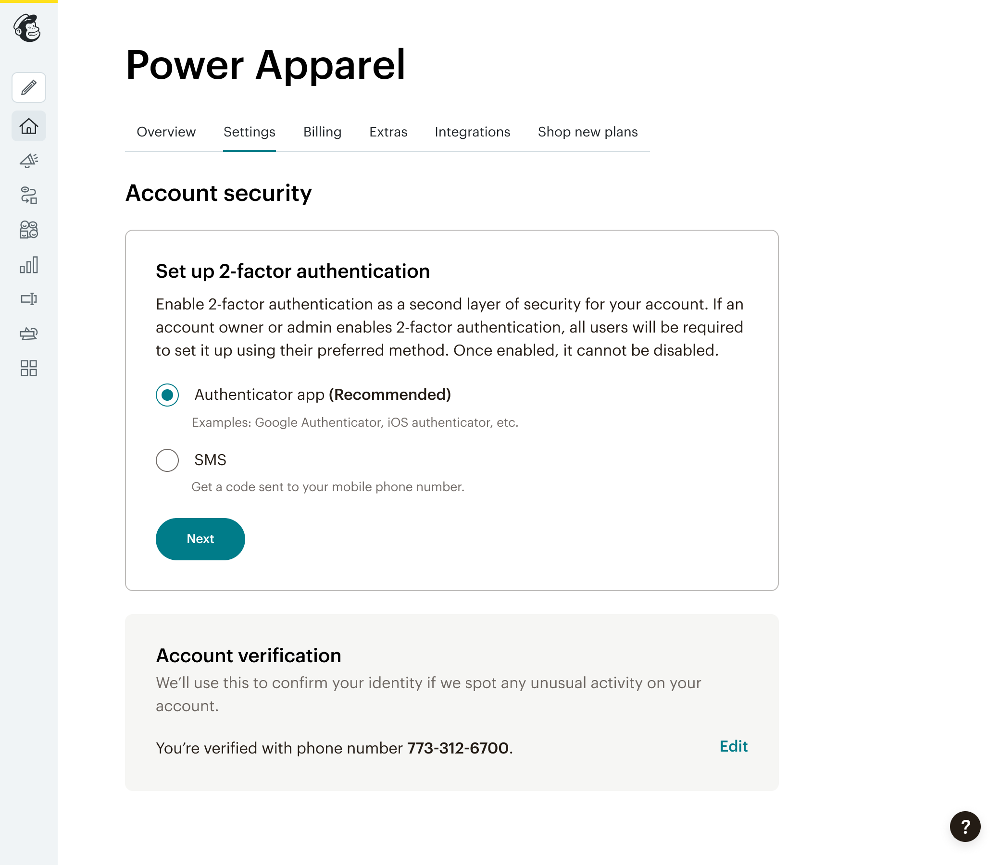
One screen from our redesigned flow - clearer hierarchy, information architecture, and instructions.
What we found when we went looking
We set up test accounts across different user types - owners, admins, authors, viewers - and walked through every possible authentication path, recording everything. What emerged was a picture no one at the company had seen clearly before: there were two entirely separate authentication systems running in parallel.
The first was what we came to call Verification - a lightweight security layer that users would sometimes encounter after creating their account. Intermittent and nearly impossible to reproduce reliably, it relied on outdated methods like security questions. The second was the traditional two-factor authentication that users opted into through a buried settings path. The two systems had different triggers, different UI, and were deeply enmeshed in sensitive sign-in code that our engineers had to approach with extreme caution.
To make things more chaotic, we discovered that one of the verification pathways had been quietly added years earlier as a one-off fix for a high-value client who couldn't receive SMS codes while traveling abroad. It had never been removed. Security debt, in production, invisibly affecting real users.
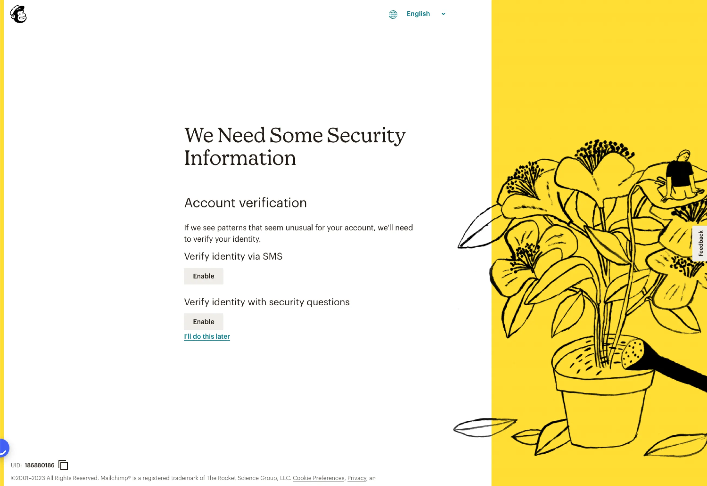
The legacy Verification screen
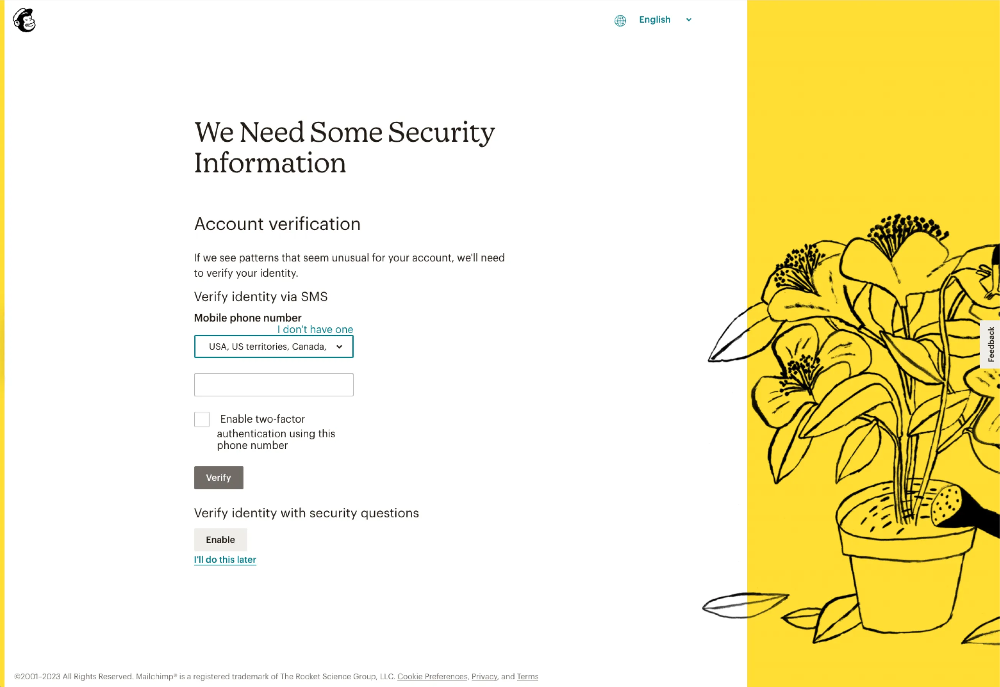
The legacy SMS Verification screen - no hierarchy or consistency with type styles
Users who had set up 2FA were genuinely confused when they encountered the Verification screen, understandably so. They'd already "done security." The distinction between these two systems was invisible to the user and poorly understood even internally. Before we could redesign anything, we had to fully understand what we'd inherited, and then figure out what was even possible to change. Our engineers made clear that Verification was so deeply embedded in core sign-in code that removing it entirely was out of scope. So we'd have to make it the best version of itself it could be, while making it far less confusing.
What our VoC data and user testing surfaced
Before a single wireframe was drawn, I went deep into our Qualtrics feedback, user testing recordings, and support tickets to understand where exactly the experience was breaking down.
Users were furious about being prompted to re-authenticate after already selecting "Remember me." We eventually traced it to a cookie issue, but the damage to trust had already been done. Users assumed Mailchimp was just ignoring their preferences.
The Configure Authenticator App modal was so tall that users with certain viewport heights would see the sticky Submit button sitting right below Step 3 of a 4-step process. They'd hit Submit, get an error, and have no idea why. This drove an enormous volume of support tickets.
Users on the Login Verification screen were offered the option to verify via SMS even if they had never provided a phone number. The code went nowhere. The error state was unhelpful. The user was stuck.
After successfully enabling 2FA, the confirmation screen still showed a "Configure Authenticator" button alongside a filled checkbox. Users didn't know if they were done or just partway through. For a security setting, this ambiguity was particularly damaging.
Mailchimp's brand voice is playful, and some of the error and success messages reflected that. But account security isn't a place for charm. We needed copy that was precise, directive, and gave users a clear path forward. Not a punchline.
Verification still offered security questions as an authentication method. This is a known weak security practice: answers are guessable, findable on social media, or forgotten over time. Deprecating this method safely, without locking out users who relied on it, was one of our first design challenges.
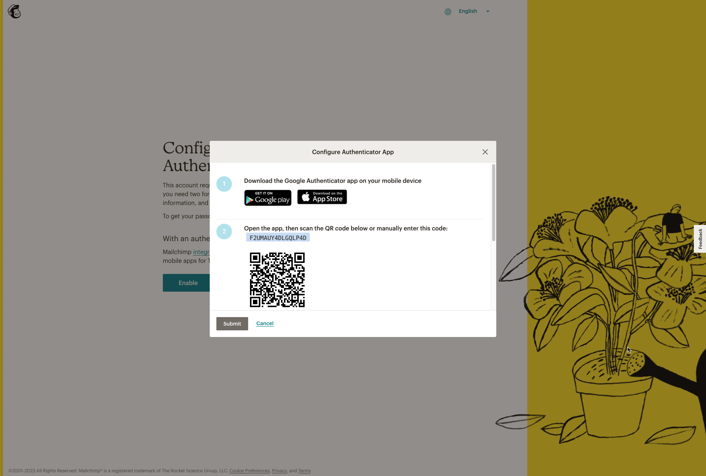
The authenticator setup modal before redesign. The modal was poorly designed with a sticky footer, which blocked the code entry field, causing early submission errors.
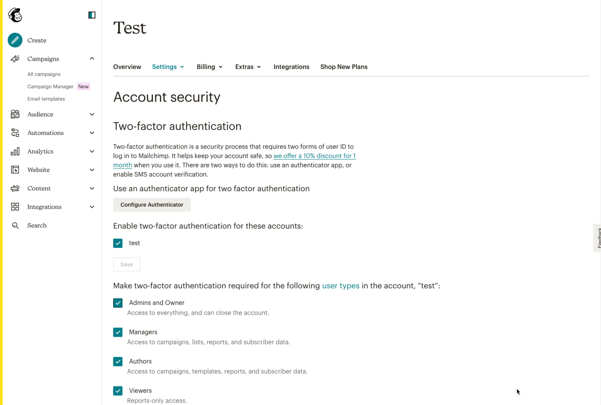
The 2FA confirmation screen before redesign. Users couldn't tell if setup was complete or if there was still something left to do.
"Users weren't failing because 2FA is hard. They were failing because the experience gave them no reliable signals."
What the data revealed, and how the project adapted
Midway through the project, as we dug into why users were struggling with 2FA login, a pattern became impossible to ignore. Users were forgetting which auth app they'd used, or which phone number they'd registered. A significant number of users were sharing logins across multiple people rather than buying additional seats. This was against Mailchimp's user agreement, but it was happening at scale.
Requiring 2FA for every user would effectively end this behavior, which, in theory, is correct. In practice, it would mean losing a large number of high-value paid accounts overnight. Our voice-of-customer data made this risk visible to the team, and it informed how the project's scope was ultimately defined.
The goal shifted from a company-wide mandate to something more achievable and less risky: making the security experience dramatically better for users who actively opted into it. That meant fixing every broken flow, clarifying every confusing state, and ensuring that users who wanted strong account security could actually get there without friction.
Later in the project, I presented a fully interactive prototype of our proposed redesign directly to the CTO. He had been closely invested in the project and wanted to see the work firsthand. I walked him through every redesigned screen, pointing out the specific moments of friction the team had resolved for users. At the end of the call, he said he was proud of what the team had accomplished, calling it a "thankless job" that would never top anyone's roadmap, but exactly the kind of work that kept Mailchimp's customers secure.
How I structured the design and delivery to minimize security exposure at every step
With my PM, we broke the work into three phases, ordered deliberately so that we first removed the weakest security option, security questions, as an option during sign up.
Security questions are a well-documented weak point in authentication design: answers are guessable, often findable on social media, and frequently forgotten. Deprecating them was the right move, but it couldn't be abrupt: our compliance team confirmed that a subset of users occasionally couldn't receive SMS codes and had been relying on security questions as their only fallback.
The legacy verification screen before redesign.
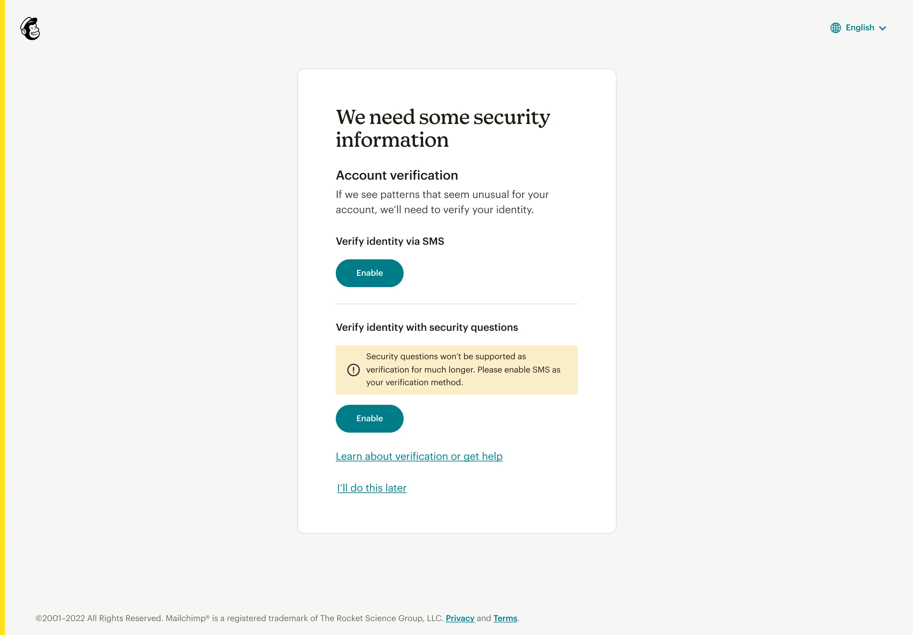
The redesigned verification screen.
The solution was a phased approach: we removed security questions as a new setup option immediately, but allowed existing users who had them to continue updating their questions as an interim measure. In parallel, we built a path to migrate those users toward SMS and, eventually, toward more secure authenticator apps, so that security questions could be retired entirely in the near future. Removing a method safely is often harder than adding one.
The security settings page was buried and visually outdated. Most of the settings pages at the time used legacy styling that had fallen behind the rest of the app. My first instinct, and one I had to advocate for, was that this redesign needed to do more than fix the UX. It needed to bring the visual design fully in line with where Mailchimp's product was headed.
With my PM, I wrote 8 user stories covering the full matrix of user types (owners, admins, authors, viewers) crossed with verification and 2FA states. I mapped every possible path a user could take (setup, edit, remove, recover) and ensured that every error state had clear copy pointing toward a resolution. For users on multi-seat accounts, I added explicit guidance about how verification works at the individual level, since this had been a major source of confusion.
After completing this redesign, I worked with other teams who were updating adjacent Settings tabs to share the new patterns, so the style updates would propagate consistently, and users would experience a coherent settings environment rather than a patchwork of redesigned and legacy pages.
The security settings page before redesign.
The redesigned security settings page. Clear distinction between different security options; no more modals - setup happens right on the page.
The authenticator setup modal before redesign. Had a high rate of submission errors due to the sticky footer issue.
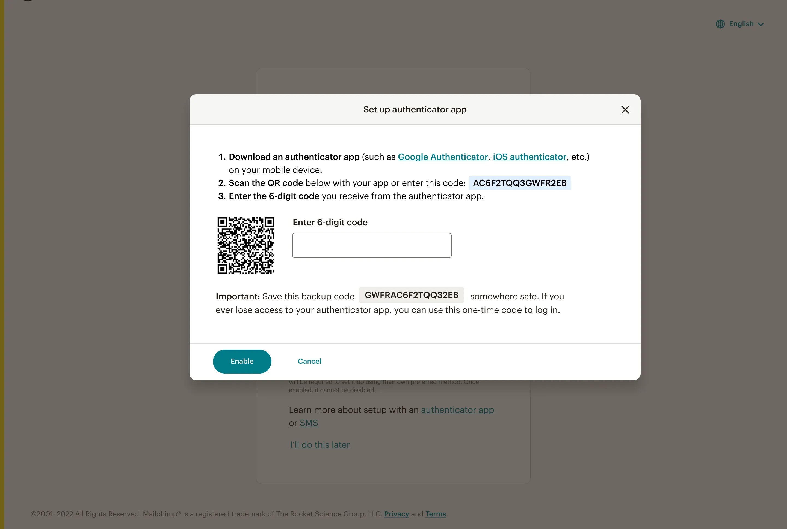
The redesigned authenticator setup modal - improved information hierarchy and user guidance.
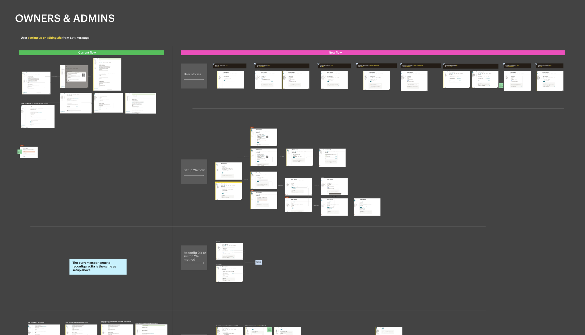
A portion of my Figma which included 8 user stories and the flows that went with them.
Phase 3 was the largest surface area and the most user-visible work: the full sign-in experience, the verification and 2FA login flows, and the account recovery paths. These pages were built in Dojo, a legacy JavaScript framework that doesn't share component libraries with the rest of the app. That meant our engineers couldn't simply port the design library components over. Instead, I worked closely with them to match our design library elements as closely as possible within Dojo's constraints, so that users moving from setup into the login experience wouldn't notice a jarring visual shift.
We also made every screen in this phase responsive, something the existing flows simply weren't. And we completely rewrote the error and success copy throughout. The previous messages had a playful, comedic tone in places where users needed clarity most. For account security, every error needed to tell the user exactly what went wrong and what to do next. No charm. Just help.
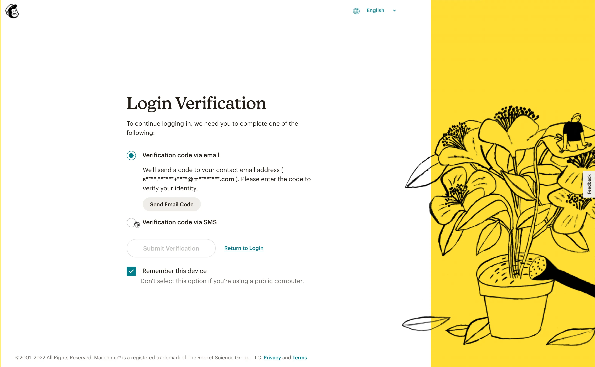
Verification login - before redesign
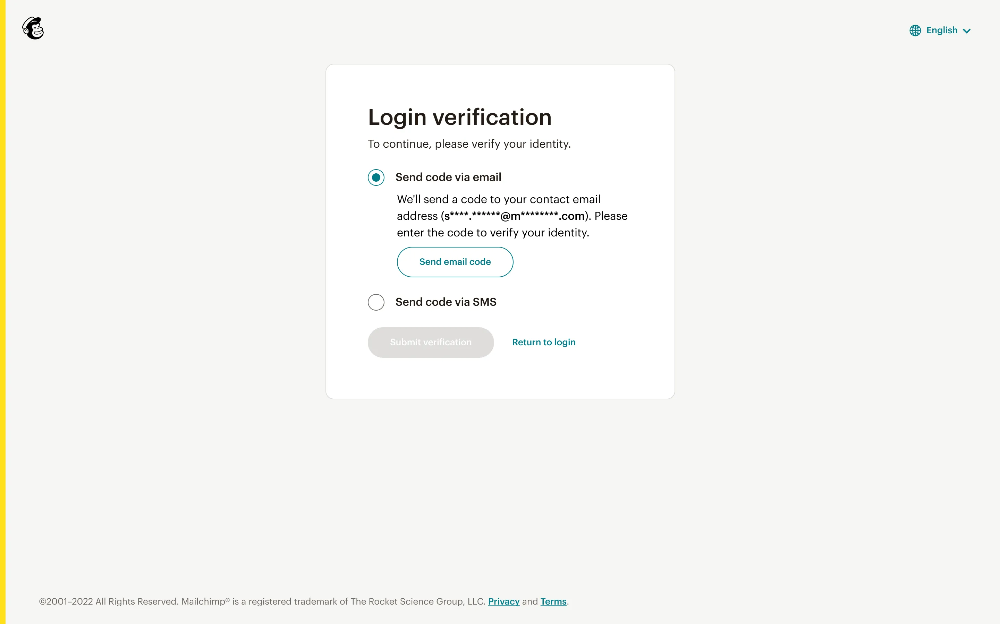
Verification login - after redesign
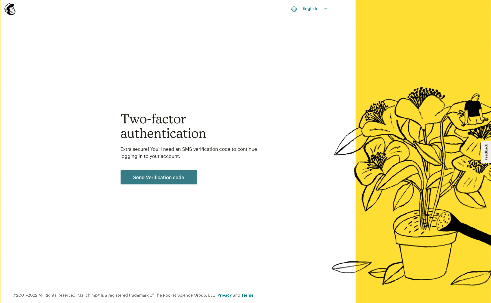
2FA login - before redesign
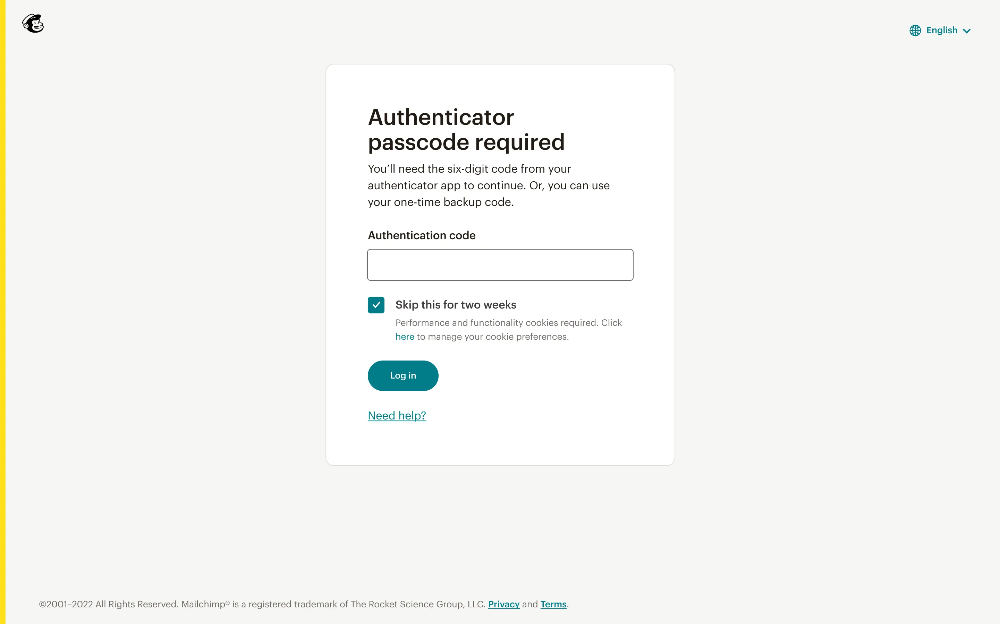
2FA login - after redesign
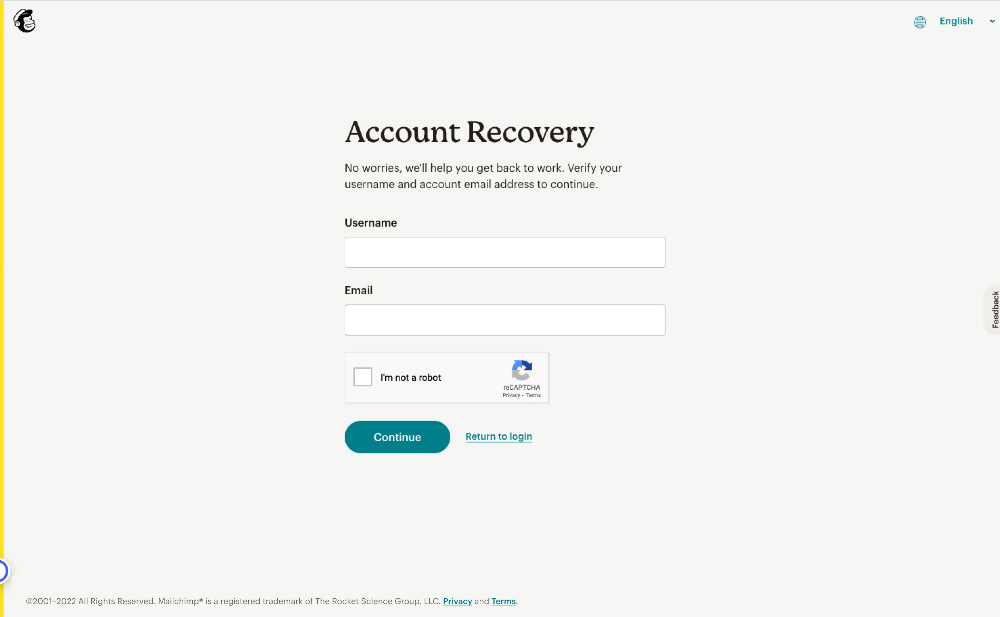
Account recovery - before redesign
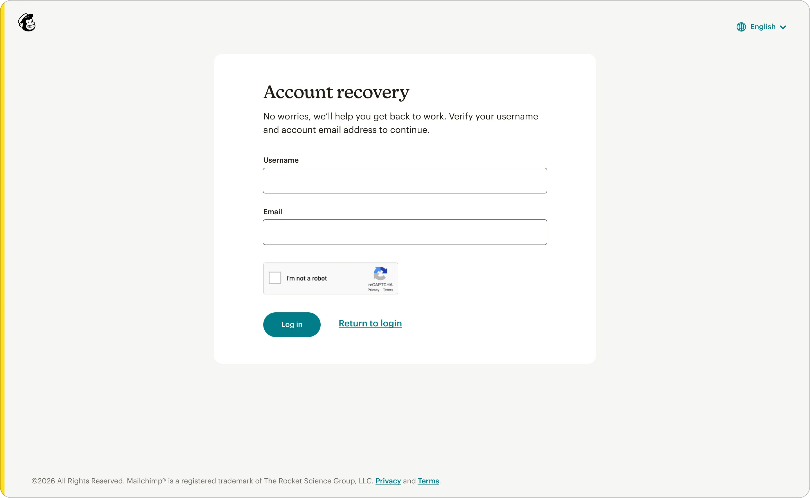
Account recovery - after redesign
Where the complexity required real design leadership, not just execution
Engineering told us Verification was too embedded in core sign-in code to remove. Rather than fight that constraint, I redirected energy into making the experience clearly legible: better copy, clearer scope, and explicit guidance to help users who had also set up 2FA understand why they were seeing something different. Working within an immovable constraint productively is a design skill, not a compromise.
When our research revealed the account-sharing behavior that mandatory 2FA would expose, the safest move would have been to stay quiet and execute the mandate. Instead, the team surfaced the finding and its implications clearly. Recognizing when research is pointing at something bigger than the original brief, and saying so, is part of the job.
Our compliance team identified users who occasionally couldn't receive SMS, often travelers or those in regions with unreliable mobile networks. Fully removing security questions immediately would lock them out. We maintained a temporary edit path for this group while building toward migration to a more secure method. Security and accessibility in tension, resolved carefully.
The Dojo framework didn't support our modern component library. Rather than accept a visual disconnect between the in-app settings and the login experience, I worked with engineers to manually approximate design library elements within Dojo's constraints. Users moving from setup into login should feel like they're in the same product, not two different eras of it.
"This will never make it on anyone's roadmap. But it's exactly the kind of work that keeps our customers secure."
CTO, Mailchimp
What a slow rollout and attentive monitoring revealed
This wasn't a project with a clean A/B test behind it. Given the security-critical nature of the work, we did a slow rollout and monitored closely for issues rather than running a controlled experiment. The signal we watched most closely was the one that had driven this project from the start: user complaints in Qualtrics dropped dramatically after launch, particularly around the "Remember Me" inconsistency, the authenticator modal, and the SMS-to-nowhere bug that had been generating steady support volume for months.
There's no A/B test that captures "churn we avoided by not mandating 2FA." There's no experiment variation that shows users not getting locked out of their accounts. The most meaningful output of this project was a combination of experience debt retired, a company-level risk surfaced and avoided, and an authentication system that finally worked the way users expected. Some of the highest-value design work doesn't ship with a lift number attached to it.
Before any design was produced, the most important thing we did was map what actually existed. Two undocumented auth systems. A legacy workaround left in production. Edge cases no one had fully enumerated. Bringing that clarity to the surface through methodical testing, cross-functional conversations, and Figma flows gave engineering, compliance, and leadership a shared foundation to make decisions from. That's not UX work. That's product infrastructure.
A different version of this project would have waited for the perfect conditions: Dojo refactored, documentation in place, a clean slate. We worked with what existed. We made the Verification screen as clear as it could be, even though we couldn't remove it. We approximated the design library in Dojo rather than accepting a jarring visual gap. The skill isn't designing in ideal conditions. It's designing well despite the real ones.
Most design research confirms what you already suspected, or refines how you execute something. The account-sharing insight didn't do either of those things. It changed the entire direction of the project. That only happens when you're looking at the data honestly, not looking for evidence to support a predetermined outcome. Bringing that finding to the CTO, unprompted and clearly framed, was the most impactful single moment of this project.
Our CTO named it directly: this kind of work doesn't get accolades, doesn't make it onto roadmap highlight reels, and doesn't generate the experiment wins that look good in review cycles. But it affects every user who tries to log in, every day. Caring about the quality of work that no one will celebrate is a choice, and one that defines what kind of designer you are.